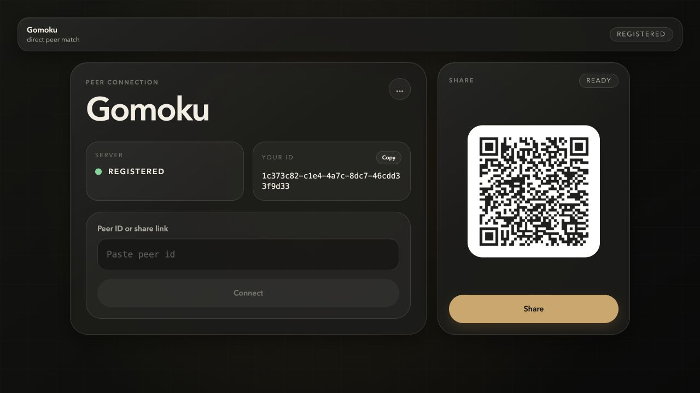
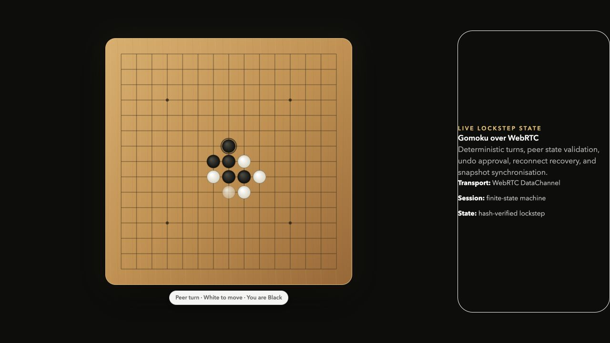

Overview项目概述
This project was built to provide a reusable networking and session layer for browser turn-based games such as gomoku, chess, and other strategy titles. Instead of coupling game rules, UI actions, and WebRTC negotiation into one code path, I separated them into a transport layer, a session layer, and game-specific extension points. 这个项目的目标是为浏览器端回合制游戏，例如五子棋、国际象棋等策略类场景，提供可复用的网络与会话层。项目没有把游戏规则、UI 交互与 WebRTC 协商耦合在同一条链路里，而是拆分为传输层、会话层和游戏专属扩展点。
Keywords: Command Bus, Session FSM, State Sync, Reconnect Recovery, Plugin Hooks 关键词：Command Bus、Session FSM、State Sync、Reconnect Recovery、Plugin Hooks
Product Walkthrough产品界面


What Problem I Solved我解决了什么问题
- Reduced browser-side WebRTC complexity into a small application-facing API with `register`, `connect`, `send`, and reactive event callbacks.把浏览器端复杂的 WebRTC 连接流程收敛为面向应用层的小型 API，包括 `register`、`connect`、`send` 和响应式事件回调。
- Unified local UI actions and remote peer messages into one command pipeline, so legality checks and side effects run through the same deterministic path.将本地 UI 操作与远端对等消息统一进入同一条命令管线，使合法性校验与副作用执行都走同一条确定性路径。
- Designed reconnect, rejoin, and snapshot synchronization flows to preserve game continuity under unstable network conditions.设计断线重连、重新加入和快照同步流程，在弱网或临时掉线场景下尽可能保持对局连续性。
What I Built我完成的核心能力
- A lightweight lockstep session layer for turn-based games over WebRTC DataChannel.基于 WebRTC DataChannel 的轻量级回合制 lockstep 会话层。
- Command handlers for `READY`, `START`, `MOVE`, `UNDO`, `RESTART`, `REJOIN`, `SYNC_REQUEST`, and `SYNC_STATE`.支持 `READY`、`START`、`MOVE`、`UNDO`、`RESTART`、`REJOIN`、`SYNC_REQUEST`、`SYNC_STATE` 等命令处理器。
- A transition-table-driven FSM to control lobby, gameplay, approval, syncing, and offline states.基于状态迁移表的 FSM，用于控制大厅、对局、审批、同步和离线状态。
- State-hash validation, pending-action coordination, and snapshot sync hooks to support consistency checks and recovery.实现状态哈希校验、待审批动作协调和快照同步钩子，用于支撑一致性校验与故障恢复。
- Plugin-style extension points for game-specific legality checks and win-condition handling.预留插件式扩展点，用于接入具体游戏的规则校验与胜负判定。
Session Architecture会话层架构
The session layer centers on `CommandBus + FSM + State + Observer`. Local actions and remote envelopes are normalized into the same execution path, checked against the current session state, then applied to the store and reflected to the UI through observers. 会话层围绕 `CommandBus + FSM + State + Observer` 设计。本地动作与远端消息会先被规整到同一执行链路，再依据当前会话状态校验，最后写入状态并通过观察者回推到 UI。
UI / LocalActionsAPI -> CommandBus -> Session Handlers -> Session FSM -> Session State -> Observer / Notification Adapter
Network Architecture网络层架构
The network layer wraps signaling, peer negotiation, and transport control behind a simplified client API. `SignalingClient` handles WebSocket registration and relay, `RtcPeer` wraps the browser peer connection, and `NetworkClient` exposes a clean public interface. 网络层把信令、对等协商与传输控制收敛到简洁的客户端 API 中。`SignalingClient` 负责 WebSocket 注册与中继，`RtcPeer` 封装浏览器端对等连接，`NetworkClient` 则向上层暴露统一入口。
SignalingClient (WebSocket) -> offer / answer / ice relay RtcPeer (RTCPeerConnection) -> DataChannel / media / reconnect cleanup NetworkClient -> register / connect / send / onMessage
Protocol and Consistency Model协议与一致性设计
The project uses a lightweight session envelope with `type`, `sid`, `seq`, `turn`, `stateHash`, and `payload`. This keeps routing simple while still leaving room for deduplication, anti-replay checks, turn validation, and desync recovery. 项目采用轻量级会话信封结构，包含 `type`、`sid`、`seq`、`turn`、`stateHash` 与 `payload` 字段，在保持路由简洁的同时，为去重、防重放、回合校验和失同步恢复预留了空间。
type SessionMessage = {
type: 'READY' | 'START' | 'MOVE' | 'UNDO' | 'RESTART'
| 'APPROVE' | 'REJECT' | 'REJOIN'
| 'SYNC_REQUEST' | 'SYNC_STATE';
from?: string;
seq?: number;
sid?: string;
turn?: number;
stateHash?: string;
payload?: unknown;
};
- `UNDO` and `RESTART` are modeled as negotiated actions, finalized only through `APPROVE` or `REJECT`.`UNDO` 与 `RESTART` 被建模为需要协商确认的动作，只有通过 `APPROVE` 或 `REJECT` 才会最终落地。
- `SYNC_REQUEST` and `SYNC_STATE` support reconnect and state restoration after temporary disconnection.`SYNC_REQUEST` 与 `SYNC_STATE` 用于支撑临时断线后的重连与状态恢复。
- `turn` and `stateHash` are reserved for desync detection and deterministic validation under lockstep play.`turn` 与 `stateHash` 用于在 lockstep 对局中进行失同步检测与确定性校验。
Why This Project Matters这个项目体现了什么能力
- Protocol design: defining message boundaries, recovery flows, and destructive-action coordination.协议设计能力：能够定义消息边界、恢复流程与破坏性动作的协调机制。
- State modeling: building deterministic state transitions with a transition-table FSM.状态建模能力：能够基于状态迁移表构建确定性的状态流转。
- Networking abstraction: reducing raw WebRTC complexity into a reusable, application-facing toolkit.网络抽象能力：能够把原始 WebRTC 复杂性封装为可复用、面向应用层的工具包。
- Reusable system thinking: separating transport, session orchestration, and game-rule plugins instead of shipping one-off logic.系统复用思维：不是做一次性业务逻辑，而是把传输层、会话编排与游戏规则插件解耦为可复用架构。